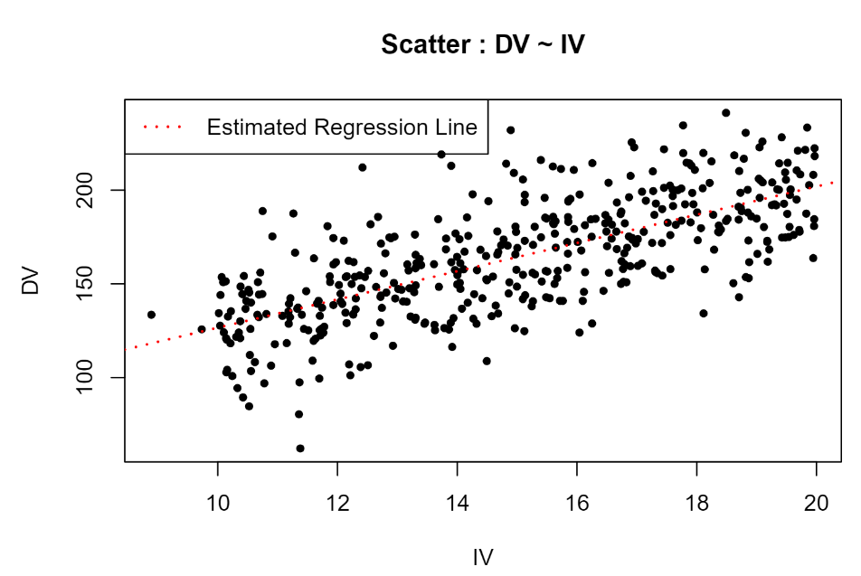
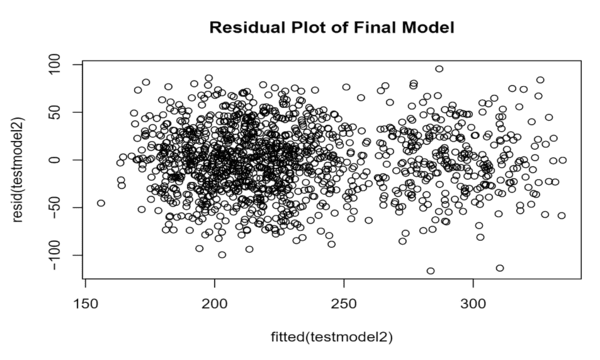

.jpg)
Explore my project where I delved into NYC Motor Vehicle Collision Datasets, using SQL for in-depth analysis and Power BI for compelling visualizations. I discover specific demographic trends and other patterns in these vehicle collisions which I use to enhance traffic safety in NYC through strategic data-based recommendations that target the reduction of future crashes in order to foster a safer urban environment. A interactive dashboard was also made displaying these key insights and patterns in the data.
.png)
Explore my Human Resources Analysis Project, a comprehensive analysis of a fictional company's human resources data using SQL and Power BI. Uncover insights on employee demographics, attrition rates, and departmental trends through my data visualizations. I drive strategic recommendations with the data that promote diversity, reduce attrition, and help enhance overall workforce success.
 (2).jpg)
Explore my Sleep Health and Lifestyle Analysis project. Utilizing SQL for data insights and Excel for dynamic visualizations, I uncover key trends in the health of 374 participants. From average heart rates and sleep durations to blood pressure categories, my interactive dashboard shows all of these insights and allows users to filter the data based on certain categories such as sleep disorder as well. My data-driven recommendations also empower the participants to make informed choices for a healthier, balanced life.

This project analyzes datasets with Independent Variable (IV) and Dependent Variable (DV) values sorted by ID and I made simple linear regression models based off these datasets. This project is broken into two parts (A and B), both with different purposes and data. The purpose of Part A is to be able to merge data sets, account for missing data, make an estimated simple linear regression model once the missing data is accounted for, and then analyze said model’s accuracy. The purpose of Part B was to analyze if different transformations of data were needed to achieve linearity for a regression model, and then analyze said model’s accuracy through a lack of fit test.

For this project, I was given a data file that contained 1335 observations of 25 variables. Of the 25 variables, one was a dependent variable (Y), and twenty-four were independent variables of which four were environmental variables (E1-E4) and twenty were genetic risk variables that were indicator variables with values of 0 and 1 (G1-G20). The goal of this project was to use the data given to find the original model that had been used to produce the data. This means finding out what independent variables significantly effect Y and what interactions between these independent variables significantly effect Y in order to build the final model that had produced this data. I then have to estimate the coefficients associated with said model and use them to make an estimate of said model.
The SQL and R code I used on all of my projects for data exploration, cleaning, and analysis.